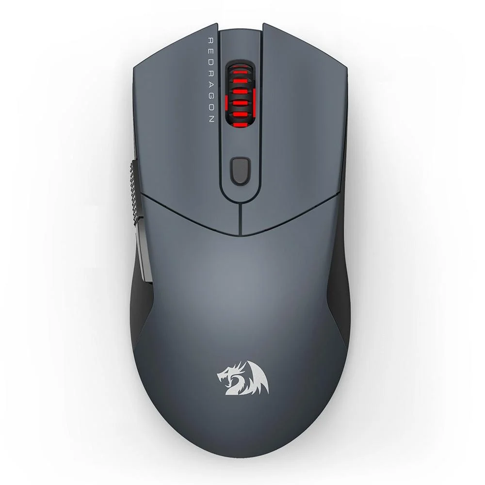

 O Redragon ST4R PRO conta com o melhor sensor do mercado, o PixArt PAW3395. Projetado para jogadores e entusiastas que priorizam precisão e velocidade, este sensor oferece alta precisão com até 26.000 DPI